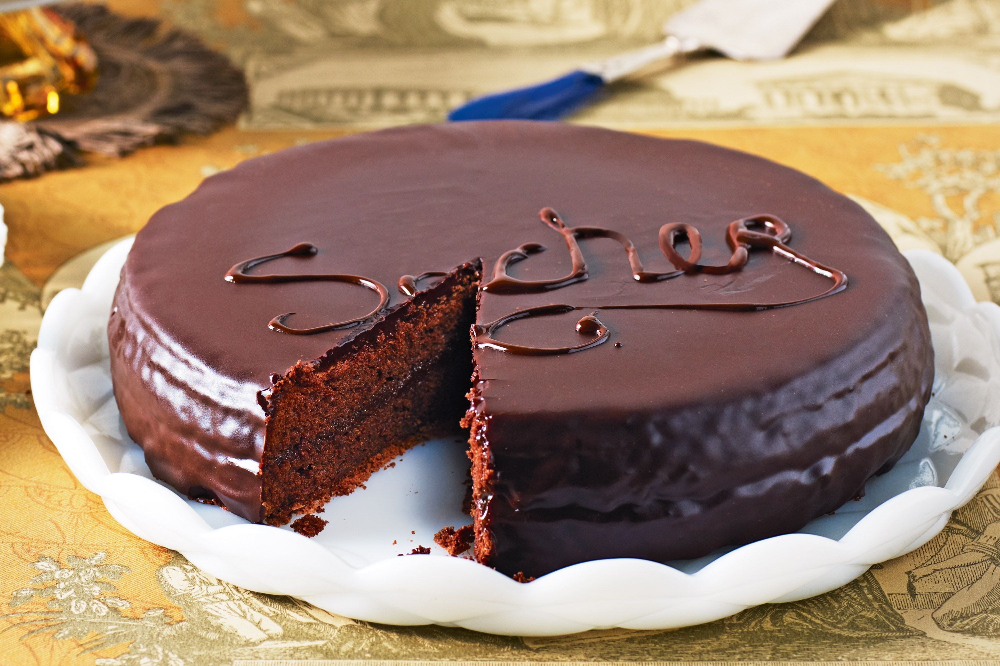

Sachertorte

Description
Sachertorte is a traditional Vienese style tort with dark chocolate and apricot jam.
Ingredients
- dark couverture chocolate (min. 55% cocoa content)
- Vanilla Pod
- softened butter
- Icing sugar
- Eggs
- Castor sugar
- Plain wheat flour
Steps
- Preheat oven to 170°C. Line the base of a springform with baking paper, grease the sides, and dust with a little flour.
Melt couverture over boiling water. Let cool slightly.
- Slit vanilla pod lengthwise and scrape out seeds. Using a hand mixer with whisks, beat the softened butter with the icing sugar and vanilla seeds until bubbles appear.
- Separate the eggs. Whisk the egg yolks into the butter mixture one by one. Now gradually add melted couverture chocolate. Beat the egg whites with the castor sugar until stiff, then place on top of the butter and chocolate mixture. Sift the flour over the mixture, then fold in the flour and beaten egg whites.
- Transfer the mixture to the springform, smooth the top, and bake in the oven (middle rack) for 10–15 minutes, leaving the oven door a finger's width ajar. Then close the oven and bake for approximately 50 minutes. (The cake is done when it yields slightly to the touch.)
- Remove the cake from the oven and loosen the sides of the springform. Carefully tip the cake onto a cake rack lined with baking paper and let cool for approximately 20 minutes. Then pull off the baking paper, turn the cake over, and leave on rack to cool completely.
- Cut the cake in half horizontally. Warm the jam and stir until smooth. Brush the top of both cake halves with the jam and place one on top of the other. Brush the sides with the jam as well.
- To make the glaze, put the castor sugar into a saucepan with 125 ml water and boil over high heat for approximately 5 minutes. Take the sugar syrup off the stove and leave to cool a little. Coarsely chop the couverture, gradually adding it to the syrup, and stir until it forms a thick liquid (see tip below).
- Pour all the lukewarm glaze liquid at once over the top of the cake and quickly spread using a palette knife. Leave the glaze to set for a few hours. Serve garnished with whipped cream.